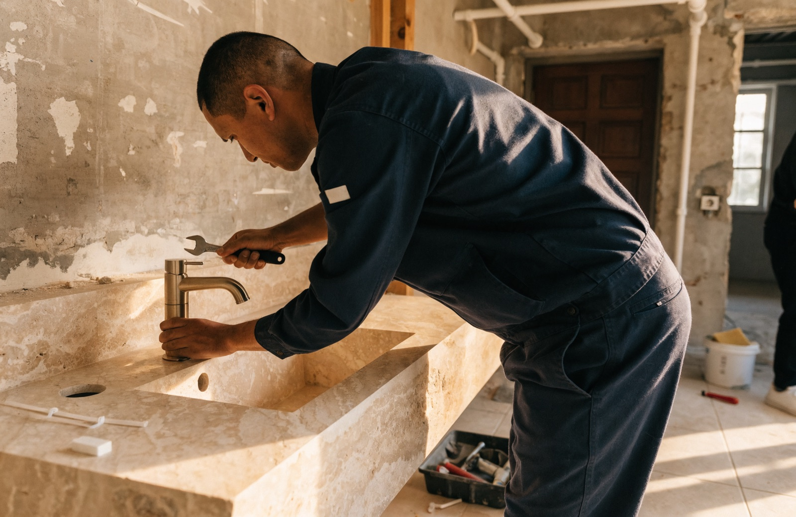

Remplacez votre baignoire par une douche italienne en une semaine
Douche de plain-pied ou receveur extra-plat, paroi vitrée sur mesure, étanchéité garantie 10 ans : Allo Sanitaire Express transforme votre baignoire en douche italienne en 5 à 7 jours, partout dans le 93 et en Île-de-France. Visite gratuite, devis ferme sous 24h.

Plus de confort, moins d'entretien, un bien valorisé
La baignoire que l'on n'utilise plus occupe près de 2 m² au sol et devient, avec l'âge, un vrai risque d'enjambement. La douche italienne, elle, s'ouvre de plain-pied sur la pièce : elle agrandit visuellement la salle de bain, se nettoie en quelques gestes et séduit immédiatement acheteurs comme locataires le jour où vous vendez ou louez.
- Accessibilité : accès de plain-pied, sans marche à enjamber — idéal pour toute la famille et les seniors
- Entretien minimal : grandes surfaces carrelées, paroi traitée anticalcaire, caniveau de douche facile à nettoyer
- Valeur du bien : une salle d'eau moderne avec douche italienne est un argument fort à la revente comme à la location
- Gain de place : l'espace libéré par la baignoire accueille un meuble vasque plus large, un sèche-serviettes ou des rangements
Et si vous en profitiez pour repenser toute la pièce ? Découvrez notre offre de rénovation de salle de bain clé en main, du sol au plafond.
Étudier mon projet gratuitementUne douche italienne ne pardonne aucune approximation
Le vrai risque d'une douche de plain-pied, ce n'est pas le carrelage : c'est l'eau qui s'infiltre sous le receveur quand les pentes ou l'étanchéité sont mal réalisées. Allo Sanitaire Express vient de l'assainissement et du dépannage sanitaire — les évacuations, les pentes d'écoulement et les dégâts des eaux, c'est notre métier d'origine.
- Contrôle et reprise des évacuations existantes avant toute pose
- Pentes d'écoulement calculées et testées en eau avant le carrelage
- Receveur extra-plat ou receveur à carreler selon la configuration du sol
- Natte d'étanchéité sous carrelage sur toute la zone de douche, garantie décennale
C'est cet ADN technique qui fait la différence entre une douche italienne qui reste impeccable dix ans et une douche qui fuit chez le voisin du dessous au bout de deux hivers.

Combien coûte le remplacement d'une baignoire par une douche italienne ?
Des fourchettes transparentes pour vous situer. Le devis final dépend de l'état des évacuations, du receveur choisi et des finitions.
| Prestation | Ce qui est compris | Prix indicatif TTC |
|---|---|---|
| Douche italienne complète | Dépose baignoire, reprise évacuations, receveur extra-plat, étanchéité, faïence, robinetterie, paroi | 3 500 – 6 000 € |
| Douche de plain-pied à carreler | Receveur à carreler encastré, caniveau, carrelage assorti au sol de la pièce | 4 500 – 6 500 € |
| Paroi vitrée sur mesure | Verre trempé 8 mm, fixe ou porte pivotante, traitement anticalcaire, profilés noirs ou laiton | 600 – 1 500 € |
| Options confort | Colonne thermostatique, niche carrelée, banc, mitigeur encastré, sol antidérapant | Sur devis |
Prix indicatifs TTC, fournitures et pose comprises. Devis ferme et détaillé après visite technique gratuite à domicile — le prix annoncé est le prix payé.
Votre douche italienne en 5 à 7 jours
Jour 1 : dépose & diagnostic
Dépose de la baignoire et de l'habillage, protection du logement, contrôle complet des évacuations et de la chape existante.
Jours 2-3 : plomberie & receveur
Reprise des évacuations, création des pentes, pose du receveur extra-plat ou à carreler, natte d'étanchéité et test en eau.
Jours 4-5 : faïence & robinetterie
Pose de la faïence murale et du carrelage, niche de rangement, installation de la colonne de douche ou du mitigeur encastré.
Jours 6-7 : paroi & réception
Pose de la paroi vitrée sur mesure, joints silicone, nettoyage complet et visite de réception avec dossier photos avant/après.
Chiffrez votre douche italienne sous 24h
Votre étude gratuite en 1 minute
Décrivez votre projet : un conseiller vous rappelle sous 2h ouvrées avec une première estimation.
Douche italienne : vos questions
Une douche italienne est-elle possible en appartement ?
Oui, dans la grande majorité des cas. En appartement, la réserve de hauteur sous le sol est souvent limitée : nous utilisons alors un receveur extra-plat (3 à 4 cm) ou un léger ressaut de quelques centimètres, avec un rendu visuel identique à une douche à l'italienne. Lors de la visite gratuite, notre technicien vérifie la hauteur disponible et la position des évacuations avant de vous proposer la solution adaptée — sans jamais toucher à la structure du plancher.
Combien de temps durent les travaux ?
Comptez 5 à 7 jours ouvrés pour un remplacement de baignoire par douche italienne : dépose, plomberie, étanchéité, faïence, puis pose de la paroi. Le chantier est mené en continu par la même équipe, la zone est protégée et nettoyée chaque soir, et vous conservez l'usage du reste du logement pendant toute la durée des travaux.
Vraie douche de plain-pied ou receveur extra-plat : que choisir ?
La douche de plain-pied (receveur à carreler encastré dans le sol) offre une continuité totale du carrelage, mais exige une réserve de hauteur suffisante pour l'évacuation — plus fréquente en maison. Le receveur extra-plat, posé au sol avec seulement 3 à 4 cm de hauteur, convient à presque toutes les configurations, notamment en appartement. Les deux solutions bénéficient de la même étanchéité par natte et de la même garantie décennale ; nous vous orientons selon votre sol lors de la visite.
La douche italienne est-elle adaptée aux seniors ?
C'est même la solution de référence : l'accès sans marche supprime le risque d'enjambement de la baignoire, première cause de chute dans la salle de bain. Nous pouvons y ajouter un sol antidérapant, des barres d'appui design et un siège de douche, et des aides comme MaPrimeAdapt' peuvent financer une partie des travaux. Consultez notre page dédiée à la salle de bain senior & PMR pour le détail des équipements et des aides.
Quel est le prix d'un remplacement de baignoire par une douche italienne ?
Comptez entre 3 500 et 6 000 € TTC pour une douche italienne complète : dépose de la baignoire, reprise des évacuations, receveur extra-plat, étanchéité, faïence, robinetterie et paroi vitrée. Le prix exact dépend de l'état de la plomberie, du receveur choisi et des finitions. Après la visite technique gratuite, vous recevez sous 24h un devis ferme, poste par poste — le prix annoncé est le prix payé.
Dans une semaine, votre baignoire peut être une douche italienne
Décrivez votre projet en 1 minute : visite gratuite, devis ferme sous 24h, sans engagement. Nous intervenons dans tout le 93, à Paris et en Île-de-France — voir nos zones d'intervention.